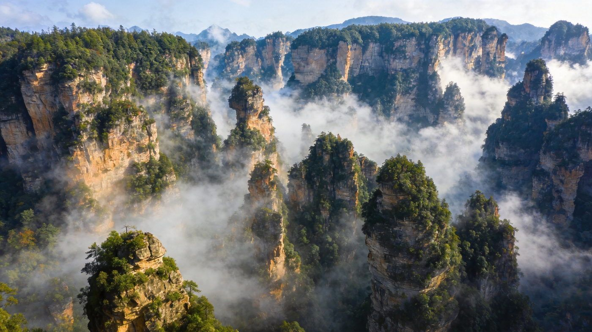
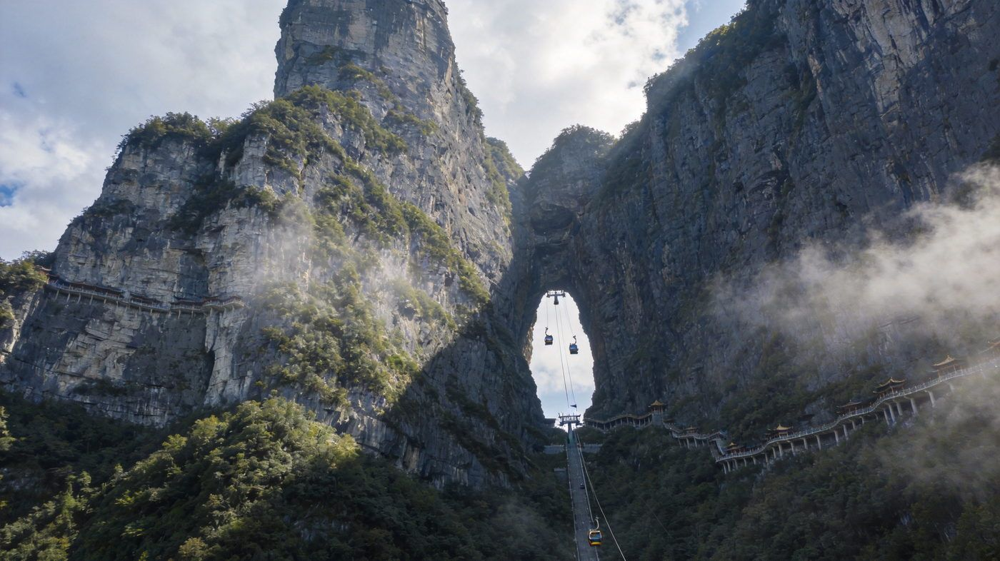
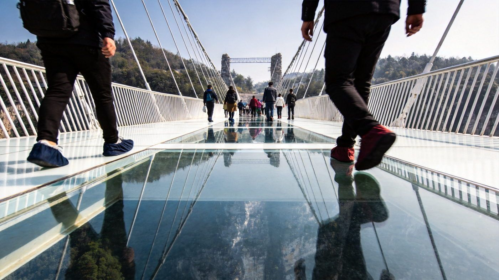

⛰️ 张家界 · ZHANGJIAJIE GUIDE
张家界双版自然指南
世界自然遗产的峰林仙境 + 天门山悬空栈道，奇峰三千、秀水八百。核心看点：武陵源国家森林公园（袁家界/天子山/金鞭溪）、天门山（玻璃栈道）、大峡谷玻璃桥。求快走 2-3 天精华版，想深度走 4-5 天版。适合 1–3 人，含行程 / 住宿 / 美食 / 预算 / 出行方式对比。
📍 目的地：张家界武陵源（湖南）👥 1–3 人⏱️ 2-3 天 / 4-5 天双方案💰 人均预算已附
⛰️2-3 天精华 · 峰林版
核心策略：D1 金鞭溪徒步+袁家界峰林，D2 天子山+天门山，精华全覆盖，可选 D3 返程缓冲。
👥 1–3 人适配：景区内部需换乘环保车/索道，2–3 人 自驾或包车最省时；预算按 人均 标注。张家界国家森林公园门票含环保车约 236 元，4 日有效，可多次进出。
🗺️ 行程安排
DAY 1 · 金鞭溪 + 袁家界
🚄/✈️ 抵达张家界🌲 金鞭溪峡谷徒步（自然氧吧）
🚠 百龙天梯上·袁家界（哈利路亚山/天下第一桥）🏨 宿武陵源景区
💡 建议从森林公园南门进，先平坦金鞭溪再乘百龙天梯（单程 65 元）上袁家界，逆人流更顺；门票尽量提前实名预约。山顶食物偏贵，建议自带干粮。
DAY 2 · 天子山 + 天门山
🗻 上午 天子山·贺龙公园·御笔峰·仙女献花☁️ 下午 天门山（玻璃栈道/天门洞）
🚠 天门山索道往返（亚洲最长索道）🏨 宿市区或武陵源
⚠️ 天门山与森林公园有一段车程，一天走两景较紧，若赶就拆到 D3；玻璃栈道需另付服务费（约 5 元/处），恐高可走鬼谷栈道平替。
DAY 3 · 弹性返程
🛍️ 市区闲逛·采购土家特产🚄 下午/晚 返程
💡 若时间富余可把大峡谷玻璃桥塞进这天（车程较远，见深度版）；否则轻松收尾，别赶夜路。
🗻4-5 天深度 · 玩透版
把森林公园四片区+天门山+大峡谷玻璃桥全部覆盖，节奏更松，还能上杨家界野景点。
👥 1–3 人适配：4-5 天更适合 自驾/包车自由行，长途跨景区最省心；预算按 人均 标注。玻璃桥（B线，大峡谷+玻璃桥）约 178 元。
🗺️ 行程安排
DAY 1 · 抵达 + 金鞭溪
🚄/✈️ 抵达张家界🌲 下午 森林公园·金鞭溪徒步
🏨 宿武陵源
💡 金鞭溪长约 7 公里、平缓清凉，适合落地首日放松热身；沿溪可看猴群与峰林倒影。
DAY 2 · 袁家界 + 杨家界/黄石寨
🚠 百龙天梯上·袁家界（哈利路亚山/天下第一桥）🌄 杨家界·峰墙奇观（人少景野）
🚠 或上黄石寨环线观景🏨 宿武陵源
⚠️ 杨家界相对原始、台阶多，备好运动鞋；黄石寨与袁家界/杨家界之间需索道/环保车切换，按体力取舍。
DAY 3 · 天子山 + 大峡谷玻璃桥
🗻 上午 天子山·御笔峰·仙女献花🌉 下午 大峡谷玻璃桥（透明悬空体验）
🚗 返市区🏨 宿市区
💡 玻璃桥在慈利县方向、车程较远，建议包车或跟一日团；B线含大峡谷栈道+玻璃桥，约 178 元。
DAY 4 · 天门山整日 + 返程
☁️ 上午 天门山·天门洞·通天大道（99道弯）🚠 穿山扶梯+快线索道
🛍️ 采购三下锅调料/腊味伴手礼🚄 下午/晚 返程
⚠️ 天门山有 A/B/C 线套票（约 285 元），实名分时段预约、旺季需提前数天订；索道排队久，建议早 8 点到。
⭐特色景点 · 单独详览
把张家界最有辨识度的 3 个点单独拎出来说清楚——值不值得去、怎么玩。

武陵源峰林 · 哈利路亚山
武陵源核心
袁家界峰林 · 云雾中的悬浮山
武陵源核心景区以石英砂岩峰林闻名于世，袁家界的「哈利路亚山」（乾坤柱）正是电影《阿凡达》悬浮山的灵感原型，天下第一桥更是天然石拱桥，云海翻涌时如入仙境。
👍 必去理由：核心必看。乘百龙天梯（单程约 65 元）上袁家界可少爬山；门票含环保车约 236 元连续 4 日有效。雨后清晨云海最佳，山顶温差大需带防风外套。
配图：原创生成 · 无版权风险

天门山 · 玻璃栈道与天门洞
城区近郊
天门山 · 悬空玻璃栈道与天门洞
离市区约 7 公里，世界最长高山客运索道（约 7455 米）直达山顶，穿行于悬崖绝壁的玻璃栈道与鬼谷栈道之间，更有大自然鬼斧神工的天门洞与 99 道弯通天大道。
👍 必去理由：必打卡。A/B 线套票约 285 元（含索道/扶梯/快线索道），实名分时段预约需提前订；玻璃栈道另收服务费约 5 元/处，恐高可改走鬼谷栈道。
配图：原创生成 · 无版权风险

大峡谷玻璃桥 · 悬空挑战
慈利县
大峡谷玻璃桥 · 高空透明挑战
位于慈利县境内，世界知名的玻璃桥横跨峡谷之上，走在透明的桥面俯瞰峡谷与森林，惊险又出片；可与大峡谷栈道一并游览，是最刺激的一天。
👍 必去理由：适合胆大者。B线（大峡谷+玻璃桥）约 178 元；离武陵源有较远车程，建议包车或跟一日团，恐高者慎上桥。
配图：原创生成 · 无版权风险
🚗怎么去：自驾 vs 包车 vs 跟团
张家界是大景区群，怎么走影响体验。下面把三种方式讲透。
张家界自驾/包车/跟团三种出行方式对比
| 维度 | 🚗 自驾 | 🚙 包车 | 🚌 跟团 |
|---|
| 核心体验 |
时间自由，可在袁家界/天子山等点位自由停留，追云海日出灵活 |
本地司机熟路、跨景区串联省心，免去自己看导航找门票站 |
行程固定、省心省力、有讲解，但节奏偏赶 |
|---|
| 适合有山路/长途驾驶经验、享受自由行的游客 | 适合不想开车、想深度玩透的 2–3 人团 | 适合带长辈小孩、图省心的游客 |
| ✔ 自由度最高 | ✔ 跨景区省心、可与人拼摊 | ✔ 全程安排、不用操心 |
| 费用参考 |
2-3 天租车+油费约 700–1200 元/车 | 包车约 500–900 元/天（含司机，去玻璃桥加价） | 人均约 1000–1600 元起 |
|---|
| ✔ 3 人拼车人均最省 | ✘ 人少时人均偏高 | ✘ 可能有自费/购物、节奏紧 |
| 💡 一句话建议：2–3 人想自由 → 自驾或包车（长途跨景区尤其推荐包车）；带老人小孩图省心 → 跟团；单人可拼车/本地小团。 |
|---|
👥 1–3 人怎么选：森林公园内部需换乘环保车+索道，门票本身含环保车；大峡谷玻璃桥车程远，强烈建议包车或跟当地一日团。旺季门票/索道需提前实名预约。
🏨住宿推荐
三档价位，均为 2 人房计。
经济型武陵源景区民宿/客栈
约 120–220 元/晚 · 人均 60–110
集中在标志门（吴家峪）周边，近景区门票站，吃住方便。
中端舒适市区中档酒店/特色客栈
约 220–380 元/晚 · 人均 110–190
离天门山索道近，方便次日早登山；设施更完善。
高端体验森林景观度假民宿/山景酒店
约 400–800 元/晚 · 人均 200–400
临山临云海民宿，推窗见峰林，适合度假与出片。
🍲张家界必吃清单
土家风味 + 湘西辣，武陵源/市区餐馆都能尝到。
4土家血粑鸭 / 酸肉土家特色 · 配土家风情演出更佳
约 60–120 元
💰预算对比（人均）
区间为保守–宽松，实际以淡旺季与选择为准。
张家界2-3天与4-5天方案人均预算对比
| 项目 | 2-3天精华版 | 4-5天深度版 |
|---|
| 大交通（往返） | 约 250–500 | 约 250–500 |
|---|
| 住宿 | 2 晚 180–380 | 3-4 晚 300–700 |
|---|
| 餐饮 | 约 200–350 | 约 350–550 |
|---|
| 门票（森林公园+天门山等） | 约 450–560 | 约 650–800 |
|---|
| 索道/电梯/环保车（部分已含） | 约 150–250 | 约 250–400 |
|---|
| 交通/包车（人均分摊） | 约 200–350 | 约 350–550 |
|---|
| 合计 · 人均 | 约 1400–2400 | 约 2200–3300 |
|---|
💡 怎么省：森林公园门票含环保车、4 日多次进出，尽量排满不浪费；天门山/玻璃桥实名提前订，旺季酒店会涨价；应届考生、老人学生凭证享折扣（以当年政策为准）。
🧭避坑 & 实用贴士
- 门票早预约：森林公园、天门山均实名分时段预约，旺季（节假日/暑假）提前数天上网订，现场常无余票。
- 天门山选对线路：A/B 线套票约 285 元包含索道/扶梯/快线索道，玻璃栈道服务费另收约 5 元/处；赶早 8 点上山避开高峰。
- 别信路边野导：自称「带你免票/逃票」的均为违规，正规售票点+官方小程序最稳妥，谨防低价陷阱。
- 山顶温差大：站在峰林/天门山顶比山下低 8–10℃，雨后易起雾能见度低，备防风外套和雨具。
- 大峡谷/天门山恐高慎选：玻璃桥、玻璃栈道高空项目恐高者改走观景栈道即可，不必强上。